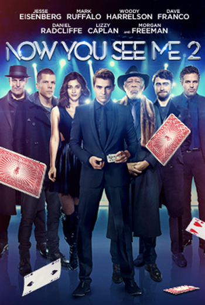

Incepcja
Światowej sławy filmowiec Christopher Nolan wyreżyserował film z
gwiazdorską obsadą, który zabiera widzów w podróż dookoła
ziemskiego globu oraz w głąb nieskończonego świata snów.
Dom Cobb (Leonardo DiCaprio) jest niezwykle sprawnym
złodziejem, mistrzem w wydobywaniu wartościowych sekretów ukrytych
głęboko w świadomości podczas fazy snu, kiedy umysł jest najbardziej
wrażliwy. Wyjątkowe umiejętności Cobba uczyniły z niego ważnego gracza
w świecie szpiegostwa przemysłowego, ale i najbardziej poszukiwanego
zbiega, a za swoją pozycję zapłacił utratą wszystkiego, co kocha.
Teraz Cobb otrzymuje szansę na odkupienie.
Dowiedz się więcej na filmweb.pl lub na IMDb.com
Dowiedz się więcej na filmweb.pl lub na IMDb.com

Law Abiding Citizen
Clyde Shelton jest przykładnym mężem i ojcem oraz
uczciwym człowiekiem, którego żona i córka zostają brutalnie zamordowane
podczas włamania do ich domu. Kiedy zabójcy zostają schwytani, sprawę
dostaje głodny sukcesu prokurator z Nick Rice.
Nick proponuje podejrzanemu złagodzenie wyroku w zamian za
zeznania przeciwko wspólnikowi. Mija dziesięć lat. Człowiek, który
uniknął kary za morderstwo zostaje znaleziony martwy, a do winy
przyznaje się Clyde Shelton. Po czym uprzedza Nicka:
albo ten naprawi błąd w systemie sprawiedliwości, przez który ucierpiała
jego rodzina albo kluczowe osoby związane z tamtym procesem zginą.
Dowiedz się więcej na
filmweb.pl
lub na
IMDb.com

Iluzja 2
Grupa magików, która na wyżyny wzniosła sztukę scenicznej iluzji
- ukazując ludzkim oczom rzeczy o jakich dotąd nikomu się nie śniło
i obdarowując publiczność milionami dolarów z kont niczego nie
podejrzewających bogaczy - tym razem wpadnie w nie lada tarapaty.
Ich żądny zemsty dawny rywal doprowadzi do katastrofy podczas finału
Super Bowl, o którą oskarżeni zostaną Czterej Jeźdźcy. Uciekając
przed FBI i policją, znienawidzeni przez publiczność będą musieli
udowodnić swą niewinność i usidlić swego wroga. A wszystko to
oczywiście przy użyciu swych niezwykłych umiejętności.
Dowiedz się więcej na filmweb.pl lub na IMDb.com
Dowiedz się więcej na filmweb.pl lub na IMDb.com
Skazani na Shawshank
Film nakręcony na podstawie książki mistrza horrorów Stephena Kinga.
Andy Dufresne (Tim Robbins), dobrze zarabiający bankier z Nowej Anglii,
zostaje oskarżony o podwójne zabójstwo - swojej żony i jej kochanka.
Uparcie twierdzi, że jest niewinny, ale dzięki niezbitym dowodom zostaje
skazany na podwójne dożywocie w więzieniu Shawshank. Shawshank rządzi
hipokryta i fanatyk biblijny, naczelnik Norton (Bob Gunton), a wraz z nim
sadystyczni strażnicy.Andy już po kilku dniach poznaje brutalną,
więzienną rzeczywistość, ale dzięki wrodzonej inteligencji, sprytowi
oraz pomocy przyjaciela Ellisa Boyda "Reda" Reddinga udaje mu się
zachować nadzieję, która pozwoli dokonać zemsty.
Dowiedz się więcej na filmweb.pl lub na IMDb.com
Dowiedz się więcej na filmweb.pl lub na IMDb.com
ForrestGump
Forrest jest małym chłopcem, kiedy jego ojciec porzuca rodzinę,
a matka utrzymuje siebie i syna biorąc pod swój dach lokatorów.
Kiedy okazuje się, że jej chłopiec ma bardzo niski iloraz inteligencji,
pozostaje nieustraszona w swoim przekonaniu, że ma on takie same
możliwości, jak każdy inny. To prawda - takie same, a nawet dużo
większe. Wiedzie go to na boisko piłki nożnej, poprzez
dżungle Wietnamu, Waszyngton, Chiny, Nowy Jork, do Luizjany i w wiele
innych miejsc, a wszystko to relacjonuje on w swych poruszających i
wstrząsających opowieściach przypadkowo spotkanym osobom.Dowiedz się więcej na
filmweb.pl
lub na
IMDb.com

Ojciec Chrzestny
USA, koniec II wojny światowej. Szefem nowojorskiej mafii jest sędziwy
Don Vito Corleone , a jego pomocnikami są synowie:
Sonny i Fredo oraz inteligentny i rozważny
Irlandczyk, Tom Hagen. Trzeci syn Vito
absolwent wyższej uczelni, jest przeciwny działalności ojca. Pewnego
dnia rodzina Corleone, odmawiając udziału w dystrybucji narkotyków,
staje się niepotrzebną przeszkodą dla innych mafii. Dochodzi do
nieudanego zamachu na Dona Corleone, a następnie do "wielkiej wojny"
nowojorskich gangów, w której niespodziewanie odegra kluczową rolę
Michael.Dowiedz się więcej na
filmweb.pl
lub na
IMDb.com
Vabank
Warszawa, lata 30. XX w. Kasiarz Henryk Kwinto wychodzi
z więzienia. Dawny wspólnik, bankier Kramer,
który go zdradził, proponuje mu pokaźne odszkodowanie. Kwinto odwiedza
Martę żonę swego wieloletniego przyjaciela i dowiaduje
się od niej, że Tadeusz nie żyje, a do jego śmierci przyczynił się
właśnie Kramer. Rozwścieczony Kwinto obmyśla wyrafinowaną zemstę.
Kontaktuje się z gangsterami Moksem i Nutą
, pozyskuje do współpracy także Duńczyka
- specjalistę od bankowych systemów alarmowych.
Kramer usiłuje wyeliminować przeciwnika z gry, jednak plan Kwinty
jest niezwykle przebiegły.Dowiedz się więcej na
filmweb.pl
lub na
IMDb.com